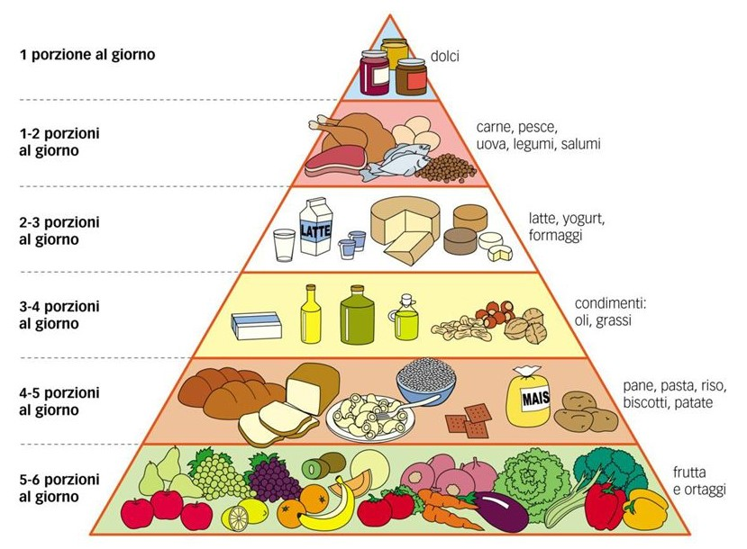

Il sito è stato creato il: 06/02/2023 dall'alunno Alessandro Dobinda.
Il cibo è alla base della nostra vita. Ognuno di noi per svolgere le attività di ogni giorno ha bisogno di assumere un determinato numero di calorie che possono venire somministrate in diversi modi. Ciò che mangiamo abitualmente va a costituire la nostra dieta quotidiana che varia fortemente da persona a persona. Mangiare alimenti sani nella giusta misura porta il nostro corpo a svilupparsi nel modo adeguato e al contrario una dieta fatta di eccessi e cibi grassi può comportare non solo all’aumento di peso ma anche a vere e proprie patologie fisiche.
La piramide alimentare è un grafico ideato dal Dipartimento Statunitense dell'Agricoltura (USDA) nel 1992 per illustrare i consigli ed i suggerimenti che dovrebbero essere seguiti per mantenere un'alimentazione completa ed equilibrata. Deve essere interpretato come un insieme di indicazioni volte a organizzare la propria alimentazione e non va considerato come schema alimentare con finalità dimagranti. La piramide è divisa orizzontalmente, dalla base verso il vertice, in diversi settori: ciascuno contiene vari tipi di alimenti e la dimensione del settore è indicativa della frequenza/quantità relativa con cui dovrebbero essere consumati per un'alimentazione completa ed equilibrata. Alla base della piramide ci sono i cibi da consumare con maggiore frequenza e in quantità maggiore, al vertice della piramide quelli da assumere con moderazione. Nel tempo, si sono susseguite diverse versioni grafiche di piramide alimentare che hanno modificato la collocazione degli alimenti nei vari settori, e, di conseguenza, la loro frequenza di consumo. Ne sono un esempio la carne rossa, di cui è stato ridotto il consumo a non più di una volta a settimana.
Le biomolecole sono i principali tasselli che compongono il nostro cibo e sono classificate in 4 gruppi fondamentali:
il cibo